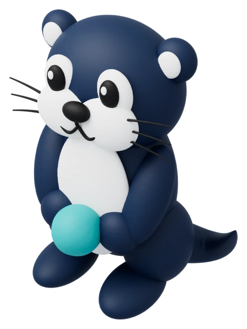
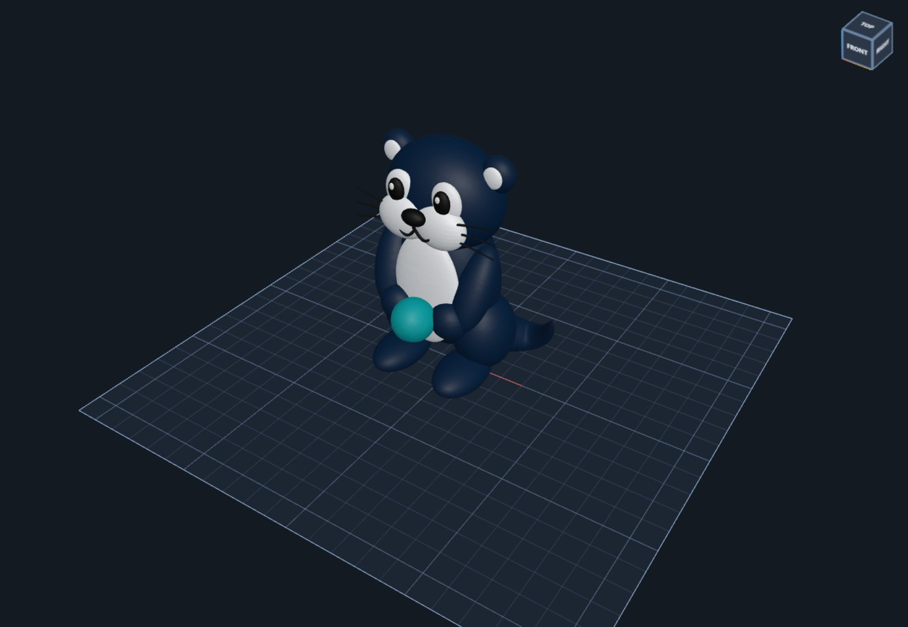
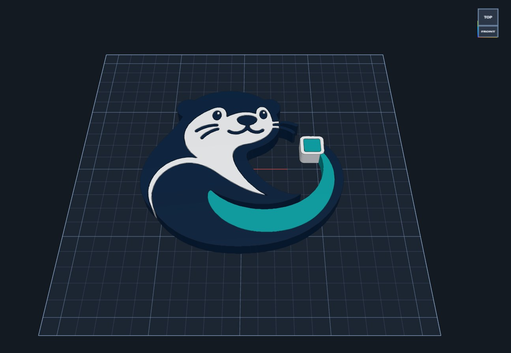
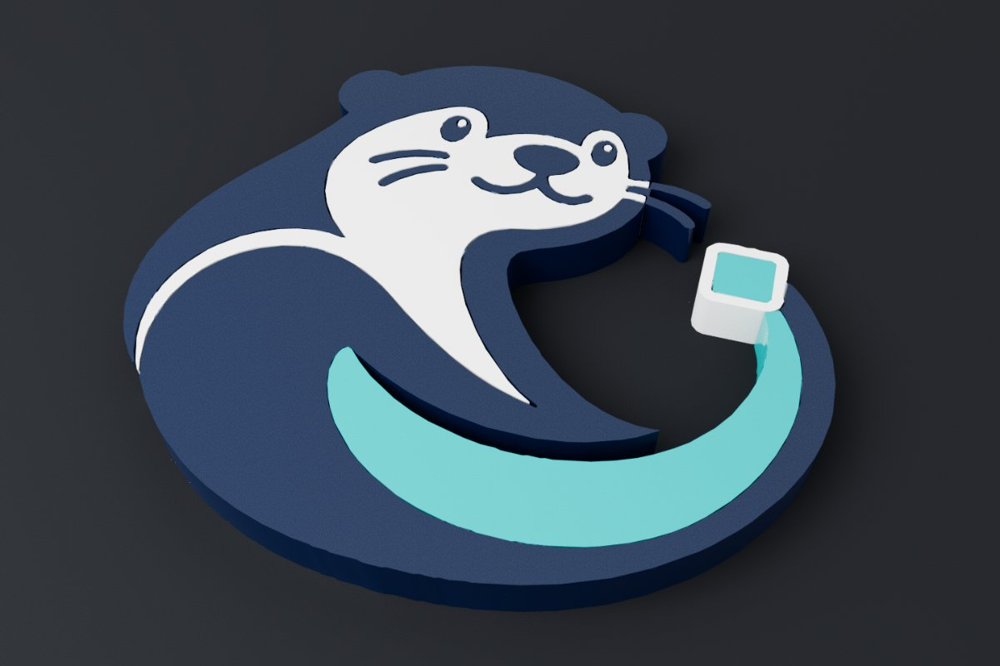
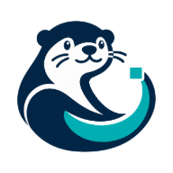

CAD for 3D printing, right in your browser.
DraftOtter is a precise, friendly design app for making parts you can print: sketch, push, pull, round and cut your way from an idea to a watertight STL, 3MF, or STEP. Nothing to buy, nothing to install, and your designs never leave your device.
Runs in Chrome, Edge and Firefox. Install it as an app for offline use.

01 · Price
Free to use. Really.
No subscription, no trial that runs out, no feature paywall, and no account to create. Open it and start designing.
02 · Features
Everything you need to go from idea to print
Real parametric CAD, made approachable — with the tools 3D printing actually needs built in.
Shapes & a big parts library
Boxes, cylinders, text in 53 fonts, gears, threads, springs and 60+ ready-made parametric parts — brackets, pulleys, hinges, snap-fits, standoffs and more.
Constrained sketches
Draw lines, arcs, circles and splines with dimensions and constraints, then extrude or revolve. Sketch right on a face of your part.
Push / pull, fillets & shells
Drag any face to thicken or cut, round and chamfer any edge, hollow parts into cups and boxes. Edits stay live — change a size and everything follows.
Solid booleans that print
Join, cut and intersect on a robust geometry kernel, so every export is a clean, watertight solid your slicer is happy with.
Variables, fits & configurations
Name your values (wall = 2) and use them anywhere. Give holes a press, snug or sliding fit, and save size variants as configurations.
History, branches & tabs
Commit versions, try ideas on a branch and merge them back, step through a feature timeline, and keep several designs open in tabs.
Sculpt, texture & deform
Shape surfaces with Blender-style brushes, add knurls, ribs and bumps, or bend, twist and taper a part. Turn photos into lithophanes and reliefs.
Check before you print
Find thin walls, narrow gaps, floating pieces and overhangs; slice through the part with a section view; measure anything; run a basic stress check.
Works with your other tools
Export STL, 3MF (named, colored parts) and STEP. Import STL, 3MF, STEP, IGES, OBJ, glTF, DXF, SVG and images — even slicer projects.
Assemblies & drawings
Mate parts together, add hinge and slider joints, check for collisions, and make 2D technical drawings with dimensions to print or export.
Photoreal renders
Path-traced pictures of your design in matte or glossy plastic, silk, metal or clear resin, with studio lighting and soft shadows.
Design with Claude
Optionally connect Claude, Anthropic's AI assistant: describe a part and watch it build and adjust the design with you, live.

03 · Made with it
Our mascot was made in DraftOtter
The otter on this page was designed in DraftOtter, right on the print bed in a browser tab. The same tools are there for your own parts:
- Start from simple shapes and combine, cut and round them
- Check printability, then export a watertight solid
- Show it off with a photoreal render
So was our logo
The DraftOtter logo as a printable, multi-color part: on the print bed, and rendered.


04 · Get started
Get started in a minute
No download, no installer, no sign-up.
Open it
Go to DraftOtter in Chrome, Edge or Firefox. It loads in a few seconds, ready to go.
Design
Drop shapes on the bed, sketch, push and pull. Mark shapes as holes and group them to cut. Your work saves automatically.
Run the print check, then export an STL or 3MF and open it in your slicer — Bambu Studio, PrusaSlicer, OrcaSlicer or Cura.
Tip: choose Install in your browser (or File → Install DraftOtter) to get it as an app that works offline.
05 · FAQ
Questions
Is DraftOtter really free?
Yes. Every feature is free to use, with no account and no subscription.
Where are my designs stored?
On your own device. DraftOtter runs entirely in your browser: designs save automatically in the browser and you can save them as files anywhere you like. Nothing is uploaded.
Does it work offline?
Yes. Install it as an app from your browser and it opens and works without an internet connection.
What do I need to run it?
A recent version of Chrome, Edge or Firefox on Windows, macOS, Linux or ChromeOS. A computer with a graphics card handles big designs and photoreal renders best, but everyday design works on most laptops.
Can I use it with my printer and slicer?
Yes. Export STL, 3MF, or STEP for any slicer — 3MF keeps part names and colors for multi-material printing. Printer presets include printers from Bambu Lab, Prusa, Creality, Voron and more.
Can I bring in models from elsewhere?
Yes: STL, 3MF (including slicer projects), STEP and IGES from other CAD tools, OBJ and glTF meshes, DXF and SVG drawings, and images to trace or turn into lithophanes.

Ready to make something?
Open DraftOtter and design your first part in minutes. It's free.